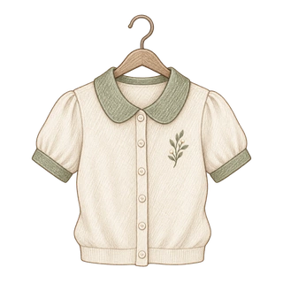

教育背景
中国传媒大学 · 硕士
未来媒体与智能设计 · 2025 — 2027
本科与荣誉 查看详情收起详情
浙江传媒学院 · 数字媒体艺术
2020.09 — 2024.06
国家奖学金、一等奖学金、浙江省优秀毕业生、三好学生、优秀学生干部奖学金。
roxaneluo
中国传媒大学
动画与数字艺术学院
未来媒体与智能设计
中国传媒大学 · 硕士
未来媒体与智能设计 · 2025 — 2027
浙江传媒学院 · 数字媒体艺术
2020.09 — 2024.06
国家奖学金、一等奖学金、浙江省优秀毕业生、三好学生、优秀学生干部奖学金。
AIGC 视频策划与制作
2025.12 — 2026.04 · 中国公共关系部
豆包实习作品 ↗参与选题、分镜、AI 生成与后期合成；产出 20 条视频，全网播放 2000 万+，累计曝光近 5000 万。
沉淀 20+ 条提示词与 10+ 套视频模板。
AI 产品策划实习生
2026.04 — 至今 · 技术工程事业群
参与语音通话产品迭代，围绕策略、体验与工具建设推进优化。
平衡回答准确性与响应效率，通过用户场景分析和数据验证，制定联网策略并提出优化建议。
参与对话规则与提示词优化，改善表达自然度、语种一致性和语音交互体验。
独立撰写产品需求文档，通过 Vibe Coding 搭建评测管理工具，支持数据管理、多模型对比与报告生成。
结合竞品研究与体验评测，协同算法及业务团队明确改进方向，推动模型持续迭代。
创意影像工作室 · 视频策划 · 2021.09 — 2024.08
参与 10+ 部商业广告与创意影像。
《不想离开》· 校庆 AI 动画 MV · 总导演 · 2023.02
统筹团队，在 15 天内完成 50+ 学生肖像的 AI 动漫化与 MV 叙事。搭建 Stable Diffusion 批量工作流并训练特定画风 LoRA，统一角色风格；作品在“学习强国”等平台展播。
溏朵记 · 品牌创立与内容运营 · 2020–2024
主导女装品牌抖音账号搭建，负责从冷启动到成熟期的视频拍摄、剪辑与后期包装。
Midjourney · Stable Diffusion · 即梦 · 可灵 · Sora · NanoBanana
Premiere Pro · After Effects · 达芬奇 · 剪映 · Cinema 4D · Character Animator · Photoshop
CET-6，可使用英语作为工作语言。
DOUBAO INTERNSHIP
从文物的新故事，到日常的小灵感。
在字节实习期间参与的内容创作。
以上为简历提供的历史成果。作品点赞、评论、收藏数另按采集日期记录，最新数据见抖音。
点赞、评论、收藏数采集于 2026.09.16，以抖音平台显示值为准。
Seedance 2.0 · 春节企划
四条视频累计播放 662 万 · 据简历记录
豆包武侠风 AI 视频
用 Seedance 2.0 制作武侠影像，在镜头、动作与氛围中讲述江湖故事。
单条视频播放 300 万+ · 据简历记录
创作者包装
「抖 ta 精选」流浪 Cookie 创作者内容包装。
豆包打卡语文书
把课本中的记忆，变成一次可以参与的 AI 合影。
冬至截屏挑战
围绕冬至节日做一个轻巧的互动，让创意随着一次截屏发生。
豆包日常教程
从樱花三宫格到 CG 游戏风格，用直观教程呈现 AI 图像的使用方式。
COMMERCIAL & CREATIVE FILMS
广告、动画与虚拟角色，五支影像作品。
视频暂时未能加载。单独打开视频 ↗
让设计大师跨越时空展开对话，以 AI 生成的形象与声音，演绎可画的自由创意。
导演与 AI 技术实现。结合 Midjourney 视觉生成、AI 语音克隆与 After Effects 合成，完成角色、声音与画面的整合。
在 AIGC 创作早期探索“AI + 广告”：以经典艺术形象串联故事，让视觉生成与声音设计共同服务品牌表达。
视频暂时未能加载。单独打开视频 ↗
面向品牌年轻化表达，把皮影戏、快板与数字动画融入西游故事，让传统文化成为广告的叙事语言。
导演与文案，负责剧本、快板词及动画制作。结合 Character Animator 骨骼绑定、面部表情捕捉与 After Effects 场景合成，推进从创意到成片。
将皮影的关节结构与 Character Animator 的骨骼运动逻辑结合，改善角色动作的僵硬感，让数字技术延续皮影的表演特点。
视频暂时未能加载。单独打开视频 ↗
参与飞利浦品牌数字人制作，让健康生活 Lab 主理人 Anton 融入真实场景，探索虚拟角色在品牌传播中的应用。
项目核心成员，参与数字人的影像制作与流程优化，协同完成摄像机校准、布光和微表情调控。
结合 DAZ 角色渲染与实拍合成，校准摄像机、透视和环境光，再通过投影、蒙版与色彩调整，让数字角色与场景自然融合。
视频暂时未能加载。单独打开视频 ↗
参与打造具有科幻感的写实数字人 Young，用场景、材质与灯光建立虚拟角色的品牌形象。
作为项目核心成员，参与 3D 场景资产整合、灯光氛围设计与材质搭建，支持品牌数字人的影像制作。
参与从摄像机校准、布光到微表情调控的制作流程优化，在保持写实质感的同时，协调角色、空间与镜头的表达。
视频暂时未能加载。单独打开视频 ↗
CONTENT & COMMERCE
溏朵记 · 从内容创作，到品牌经营。

围绕都市银发女性的穿搭需求，建立账号定位，推进从冷启动到成熟期的内容运营。
负责视频拍摄、剪辑和后期包装，将服装展示转化为适合抖音观看的短视频内容。
研究目标用户的内容偏好与消费习惯，调整表达方式，帮助品牌触达更匹配的受众。
以上为品牌历史成果。2025 年双十一销售额为我参与结束后的品牌后续成绩。